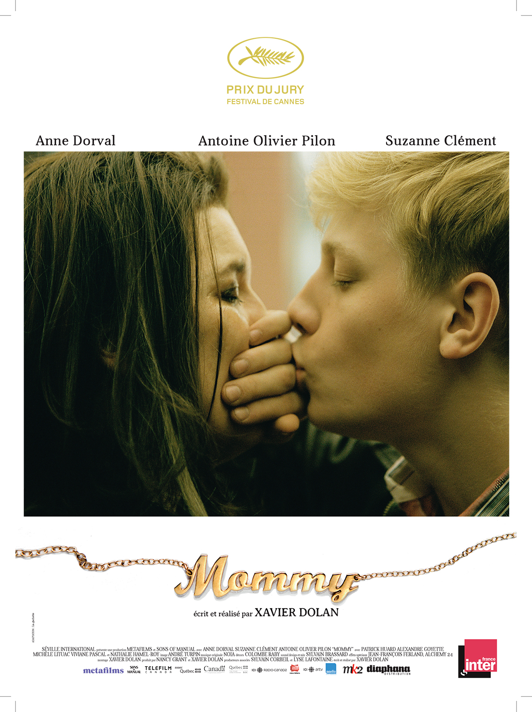

Kevin Marquenet
Student
student school wagon bla bla bla bla bla bla.
student school wagon bla bla bla bla bla bla.
| FILMS | SYNOPSIS |
|---|---|
|  |
Une veuve mono-parentale hérite de la garde de son fils, un adolescent TDAH impulsif et violent. Au coeur de leurs emportements et difficultés, ils tentent de joindre les deux bouts, notamment grâce à l’aide inattendue de l’énigmatique voisine d’en face, Kyla. Tous les trois, ils retrouvent une forme d’équilibre et, bientôt, d’espoir. |

|
Whiplash est un film dramatique américain écrit et réalisé par Damien Chazelle, sorti en 2014. Il s'agit de l'adaptation du court métrage du même réalisateur qui a remporté le Prix du jury au festival de Sundance 2013. |

|
À l’occasion de son cinquième anniversaire de mariage, Nick Dunne signale la disparition de sa femme, Amy. Sous la pression de la police et l’affolement des médias, l’image du couple modèle commence à s’effriter. Très vite, les mensonges de Nick et son étrange comportement amènent tout le monde à se poser la même question : a-t-il tué sa femme ? |